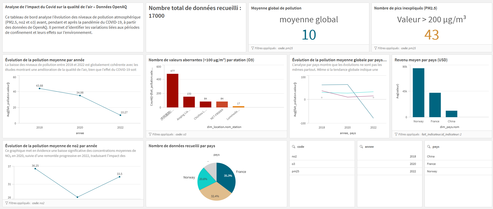

Data - Analyse de la qualité de l'air - Covid-19
Projet d'analyse de données portant sur l'évolution de la qualité de l'air pendant la période du Covid-19. Nous avons collecté, trié et nettoyé les données afin de les rendre exploitables, puis réalisé des analyses à partir de différents KPI. Les résultats ont ensuite été présentés sous forme de tableaux de bord afin de faciliter leur interprétation et leur comparaison.